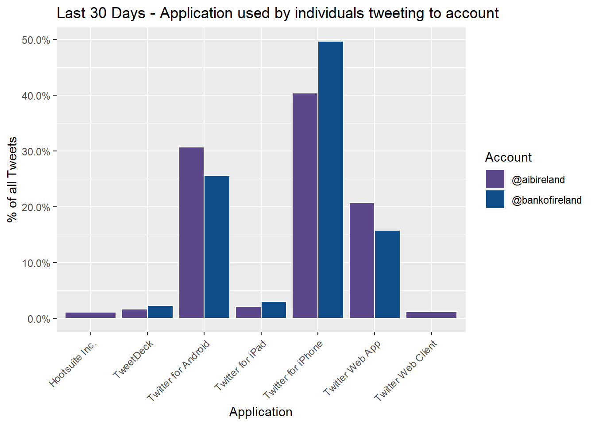
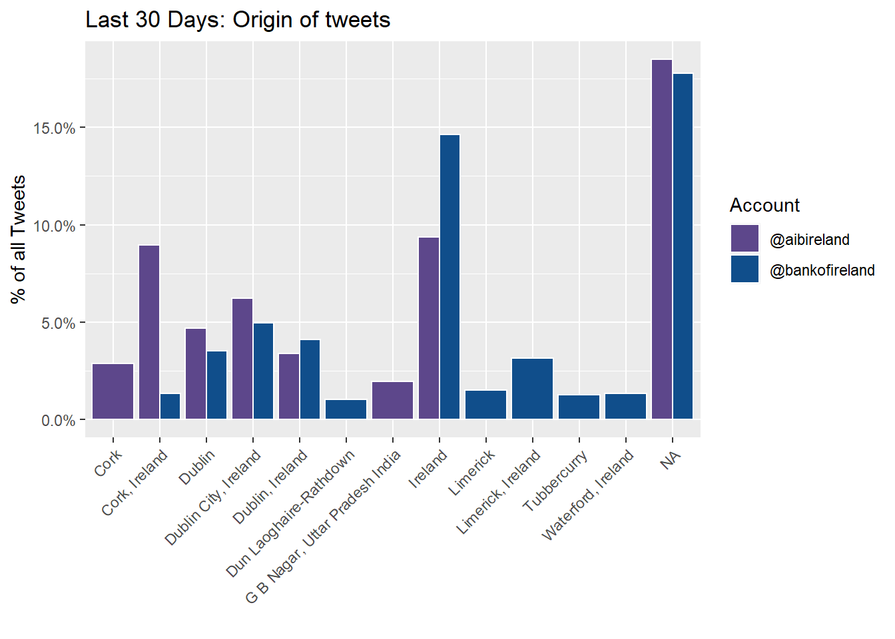
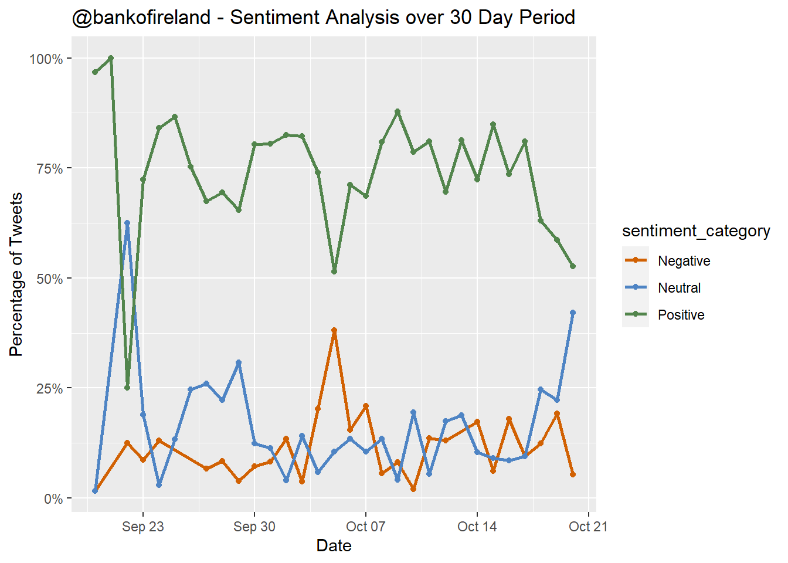
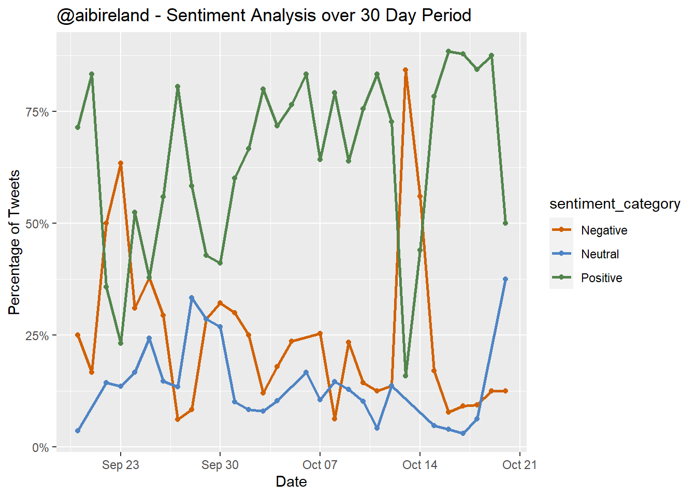

Analysing sentiment based on a text string is pretty classic introductory problem in the field of Machine Learning.
The idea is seductively simple - by analysing the data of publically available tweets is it possible to discern or extrapolate some additional analysis.
Nevertheless the analysis does provide the opportunity to plot some pretty graphs
Objective
Twitter Accounts
Bank of Ireland operate two profiles on Twitter – the first @bankofireland is utilised to promote the Bank of Ireland brand. (primary account). The second @talktoboi (support account) allows users to directly contact Bank of Ireland support staff to resolve issues.
This is a similar approach adopted by AIB – the following table provides an overview of the accounts operated by both BOI and AIB:
| Account | Type | Followers | Description |
|---|---|---|---|
| @bankofireland | Primary | 39.3k | Official AIB Twitter profile. Primarily used to promote the Bank of Ireland brand on Twitter |
| @talktoboi | Customer Support | 41.3k | Bank of Ireland’s Twitter customer support channel. Used to manage queries directed to Bank of Ireland customer support queries |
| @aibireland | Primary | 30.9k | Official AIB Twitter profile. Primarily used to promote the AIB brand on Twitter |
| @askaib | Customer Support | 43k | Official AIB Support channel. Customer queries are directed to this twitter account and resolved by AIB’s dedicated Twitter customer care team |
# Converting the date into weekly blocks
boi_timeline$date_week <- data.frame(floor_date(as.Date(boi_timeline$created_at), unit = "week"))
names(boi_timeline$date_week) = "date_week"
aib_timeline$date_week <- data.frame(floor_date(as.Date(aib_timeline$created_at), unit = "week"))
names(aib_timeline$date_week) = "date_week"
boi_by_week <- as_tibble(boi_timeline$date_week) %>%
filter(date_week >= '2019-07-14' & date_week <= '2019-10-13') %>%
group_by(date_week) %>%
summarise(cnt = n()) %>%
mutate(account = '@bankofireland')
aib_by_week <- as_tibble(aib_timeline$date_week) %>%
filter(date_week >= '2019-07-14' & date_week <= '2019-10-13') %>%
group_by(date_week) %>%
summarise(cnt = n()) %>%
mutate(account = '@aibireland')# ***************************************************
# Plotting AIB / BOI Output over a four month window
# ***************************************************
ggplot(rbind(aib_by_week, boi_by_week), aes(x=as.Date(date_week), y=cnt, fill= account)) +
geom_bar(stat="identity", position="dodge", color='white')+
labs(x="Weekly Block", y="Tweet Count") +
scale_x_date(breaks = '1 weeks', date_labels = "%b-%d") +
ggtitle("Tweet Activity per Week") +
scale_fill_manual("Account", values = c("@aibireland" = "mediumpurple4", "@bankofireland" = "dodgerblue4")) +
theme(axis.text.x = element_text(angle = 45, hjust=1)) 
# Saving output of ggplot
# ggsave("tweet_activity_per_week.png", width = 10, height = 6, units = "in", dpi=200)tweets_30day_boi_source <- as_tibble(tweets_30day_boi$source) %>%
group_by(value) %>%
summarise(cnt = n()) %>%
mutate(perc = cnt / sum(cnt)) %>%
filter(perc >= 0.01) %>%
mutate(account = '@bankofireland')
tweets_30day_aib_source <- as_tibble(tweets_30day_aib$source) %>%
group_by(value) %>%
summarise(cnt = n()) %>%
mutate(perc = cnt / sum(cnt)) %>%
filter(perc >= 0.01) %>%
mutate(account = '@aibireland')
plot_devices <- ggplot(rbind(tweets_30day_aib_source, tweets_30day_boi_source),
aes(x=value, y=perc, fill=account)) +
geom_bar(stat="identity", position="dodge", color='white')+
labs(x="Application", y="% of all Tweets") +
scale_y_continuous(labels = scales::percent) +
ggtitle("Last 30 Days - Application used by individuals tweeting to account") +
scale_fill_manual("Account",
values = c("@aibireland" = "mediumpurple4", "@bankofireland" = "dodgerblue4")) +
theme(axis.text.x = element_text(angle = 45, hjust=1))
## Saving plot
#ggsave("device_used_for_tweets.png", width = 10, height = 6, units = "in", dpi=200)
# Visualise plot
plot_devices 
boi_loc <- as_tibble(tweets_30day_boi$location) %>%
group_by(value) %>%
summarise(cnt = n()) %>%
mutate(perc = cnt / sum(cnt)) %>%
mutate(account = '@bankofireland') %>%
filter(perc >= 0.01)
aib_loc <- as_tibble(tweets_30day_aib$location) %>%
group_by(value) %>%
summarise(cnt = n()) %>%
mutate(perc = cnt / sum(cnt)) %>%
mutate(account = '@aibireland') %>%
filter(perc >= 0.01)
ggplot(rbind(aib_loc, boi_loc), aes(x=value, y=perc, fill= account)) +
geom_bar(stat="identity", position="dodge", color='white')+
labs(x = "", y="% of all Tweets") +
scale_y_continuous(labels = scales::percent) +
ggtitle("Last 30 Days: Origin of tweets") +
scale_fill_manual("Account", values = c("@aibireland" = "mediumpurple4", "@bankofireland" = "dodgerblue4")) +
theme(axis.text.x = element_text(angle = 45, hjust=1)) 
ggsave("tweet_origin_main_accounts.png", width = 10, height = 6, units = "in", dpi=100)Next we can parse the tweets to extract the most frequent words mentioned:
# plot the top 15 words
custom_words <- as.data.frame(c('aibireland','boi', 'talktoboi', 'bankofireland', 'bank', 'askaib'), stringsAsFactors=FALSE)
colnames(custom_words) <- 'word'
# plotting the top words boi
tweets_boi %>%
filter(created_at >= filter_date) %>%
dplyr::select(text_clean) %>%
unnest_tokens(word, text_clean) %>%
anti_join(stop_words) %>%
anti_join(custom_words) %>%
count(word, sort = TRUE) %>%
top_n(25) %>%
mutate(word = reorder(word, n)) %>%
ggplot(aes(x = word, y = n)) +
geom_col(fill="dodgerblue4") +
xlab(NULL) +
coord_flip() +
labs(x = "Unique Words",
y = "Count",
title = "@Talktoboi - High frequency words in tweets")
# ggsave("frequent_words_boi.png", width = 10, height = 6, units = "in", dpi=200)
# plotting the top words
tweets_aib %>%
filter(created_at >= filter_date) %>%
filter(screen_name != 'EBSSVRCampaign') %>%
dplyr::select(text_clean) %>%
unnest_tokens(word, text_clean) %>%
anti_join(stop_words) %>%
anti_join(custom_words) %>%
count(word, sort = TRUE) %>%
top_n(25) %>%
mutate(word = reorder(word, n)) %>%
ggplot(aes(x = word, y = n)) +
geom_col(fill="mediumpurple4") +
xlab(NULL) +
coord_flip() +
labs(x = "Unique Words",
y = "Count",
title = "@Askaib - High frequency words in tweets")
# ggsave("frequent_words_aib.png", width = 10, height = 6, units = "in", dpi=200)Sentiment analysis of tweets:
library("SnowballC")
library("tm")
library("syuzhet")
library('wesanderson')
boi_tweets_sent <- tweets_30day_boi$text_clean
aib_tweets_sent <- tweets_30day_aib$text_clean
word.boi <- as.vector(boi_tweets_sent)
word.aib <- as.vector(aib_tweets_sent)
sent.value_boi <- get_sentiment(word.boi)
sent.value_aib <- get_sentiment(word.aib)
category_sent_boi <- ifelse(sent.value_boi < 0, "Negative", ifelse(sent.value_boi > 0, "Positive", "Neutral"))
df_sent_boi <- cbind.data.frame(tweets_30day_boi$created_at, word.boi,sent.value_boi,category_sent_boi)
colnames(df_sent_boi) <- c('date', 'tweet', 'sentiment_score', 'sentiment_category')
category_sent_aib <- ifelse(sent.value_aib < 0, "Negative", ifelse(sent.value_aib > 0, "Positive", "Neutral"))
df_sent_aib <- cbind.data.frame(tweets_30day_aib$created_at, word.aib,sent.value_aib,category_sent_aib)
colnames(df_sent_aib) <- c('date', 'tweet', 'sentiment_score', 'sentiment_category')
as_tibble(df_sent_boi) %>%
mutate(date = as.Date(date)) %>%
mutate(date = floor_date(date, unit = "day")) %>%
group_by(date, sentiment_category) %>%
summarise(cnt = n()) %>%
mutate(perc = cnt / sum(cnt)) %>%
ggplot(aes(x=date, y=perc, group=sentiment_category, color = sentiment_category)) +
geom_line(size=1) +
geom_point() +
scale_y_continuous(labels = scales::percent) +
scale_color_manual(values=c('#D16103', '#4E84C4', '#52854C')) + #wes_palette(n=3, name="Darjeeling1")) +
labs(x = "Date",
y = "Percentage of Tweets",
title = "@bankofireland - Sentiment Analysis over 30 Day Period")
# ggsave("sentiment_boi.png", width = 10, height = 6, units = "in", dpi=200)
as_tibble(df_sent_aib) %>%
mutate(date = as.Date(date)) %>%
mutate(date = floor_date(date, unit = "day")) %>%
group_by(date, sentiment_category) %>%
summarise(cnt = n()) %>%
mutate(perc = cnt / sum(cnt)) %>%
ggplot(aes(x=date, y=perc, group=sentiment_category, color = sentiment_category)) +
geom_line(size=1) +
geom_point() +
scale_y_continuous(labels = scales::percent) +
scale_color_manual(values=c('#D16103', '#4E84C4', '#52854C')) + #wes_palette(n=3, name="Darjeeling1")) +
labs(x = "Date",
y = "Percentage of Tweets",
title = "@aibireland - Sentiment Analysis over 30 Day Period")
# ggsave("sentiment_aib.png", width = 10, height = 6, units = "in", dpi=200)